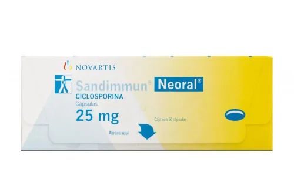
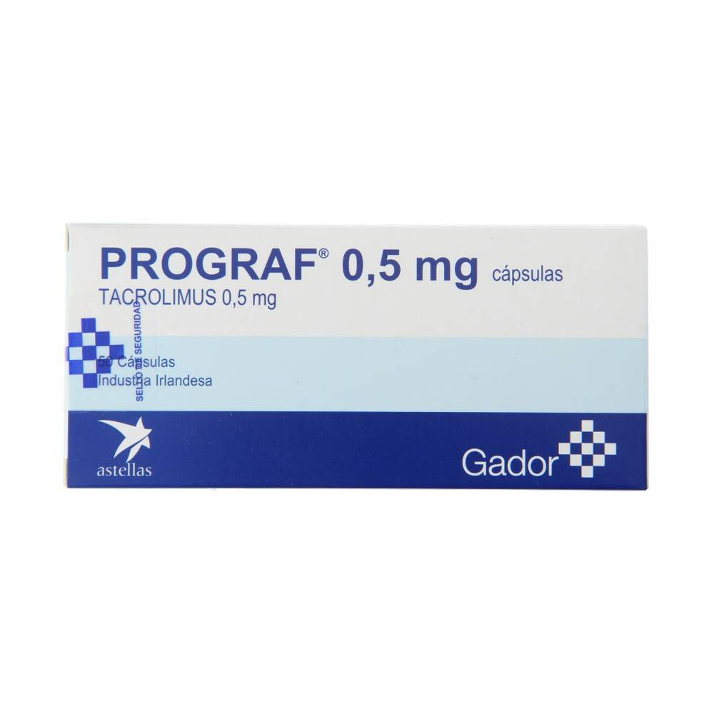
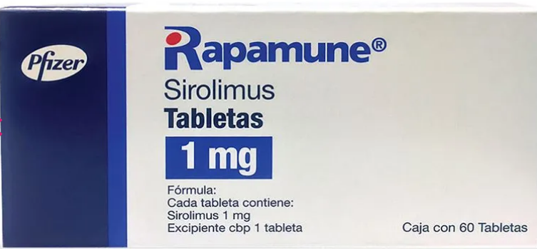
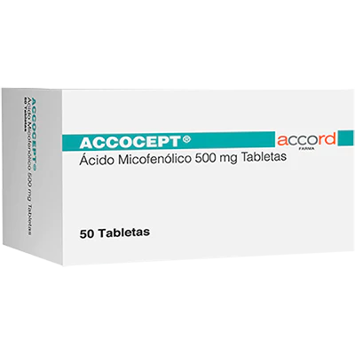

| Grupo | Mecanismo de Acción |
|---|---|
| Glucocorticoides | Se unen a receptores glucocorticoides → inhiben transcripción de genes proinflamatorios (IL-1, IL-2, TNF-α), bloquean la fosfolipasa A2 → reducen prostaglandinas/leucotrienos. |
| Inhibidores de la calcineurina (ciclosporina, tacrolimus) | Inhiben la fosfatasa calcineurina → bloquean activación del factor de transcripción NFAT → ↓ IL-2 → ↓ activación de linfocitos T. |
| Inhibidores de la señal de proliferación (sirolimus/everolimus) | Inhiben la proteína mTOR → detienen ciclo celular en fase G1 → ↓ proliferación de linfocitos T y B. |
| Micofenolato mofetilo | Inhibe la inosina monofosfato deshidrogenasa (IMPDH) → ↓ síntesis de purinas → ↓ proliferación de linfocitos B y T. |
| Talidomida | Inhibe TNF-α, reduce la angiogénesis y modula la función de células T. Afecta la adhesión celular y coestimulación inmunológica. |
| Fármaco | Vía | Formas |
|---|---|---|
| Prednisona | Oral | Tabletas, solución |
| Ciclosporina | Oral, IV | Cápsulas blandas, solución, inyección |
| Tacrolimus | Oral, IV | Cápsulas, solución, inyección |
| Sirolimus | Oral | Comprimidos, solución |
| Micofenolato | Oral, IV | Tabletas, suspensión, solución |
| Talidomida | Oral | Cápsulas |